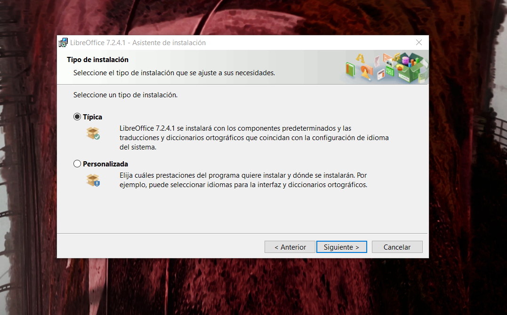

Windows:
Lo primero que debemos hacer es ir a la página de LibreOffice y dar click en la sección "Descargar"

LibreOffice puede ser descargado para su uso en numerosos sitemas operativos. En este ejemplo, mostraremos la descarga para un sistema operativo Windows. Descargaremos la última versión disponible (debemos seleccionar correctamente la arquitectura de nuestro ordenador):

Una vez descargado, podremos proceder con la instalación. Abrimos el archivo y, si pulsamos la opción "abrir con", LibreOffice se instalará inmediatamente después de terminar de descargarse. Nos saldrán dos opciones de instalación, "Típica" y "Personalizada", con instrucciones de qué hace cada una. En este caso descargaré los componentes predeterminados del programa
Antes de concluir con la instalación, nos aparecerán dos opciones, las cuales nos permiten crear un acceso directo de LibreOffice en el escritorio y ejecutar el programa automáticamente cuando se encienda el ordenador. Después de esto, le damos click en "instalar"


Ubuntu:
Para descargar LibreOffice en Ubuntu, en la seccón "Descargas" debemos seleccionar el sistema operativo Linux

Despues de pulsar el botón "Descargar", nos aparecerá otra página en la cual debemos descargar otros dos archivos, que son "Interfaz de usuario traducida" y "Ayuda interna de LibreOffice". Una vez descargados, debemos descomprimir todos los paquetes.

Es recomendable cambiar el nombre de las carpetas para facilitar la instalación

Después, abriremos el terminal de Ubuntu y nos posicionaremos en la ruta donde hayamos descargado el instalador con el comando "cd". A su vez, dentro de esta carpeta nos posicionaremos en "DEBS", donde se encuentran todos los paquetes de instalación.

Una vez dentro de la carpeta "DEBS", haremos uso del siguiente comando para instalar todos los archivos con extensión ".deb":
sudo dpkg -i *.deb

El procedimiento es exactamente el mismo con las carpetas de "ayuda" e "idioma". Nos posicionamos en ellas y buscamos la carpeta "DEBS". Una vez dentro de esta, hacemos uso del comando sudo dpkg -i *.deb
Carpeta IDIOMA:

Carpeta AYUDAS:

Y de esta forma ya habríamos concluido con la instalación de LibreOffice en Ubuntu.

Comparativa LibreOffice - Microsoft Office
| Principales Diferencias | LibreOffice | Microsoft Office |
|---|---|---|
| Disponibilidad Multiplataforma | Sí | Parcial (problemas de compatibilidad) |
| Código libre | Sí | No |
| Versión portátil ejecutable en USB | Sí | No |
| Disponibilidad sin costo | Sí | No |